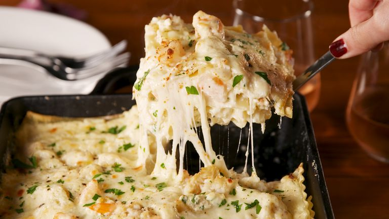

Seafood Lasagna

To be honest, I was veryyyy skeptical about this lasagna. Shrimp with crab, heavy cream, Parmesan, mozzarella, and ricotta?! Yes! Our whole team went crazy over the combo. Don't be scared. If you are still a little skeptical check out our classic lasagna instead!
Have you made this yet? Let us know how it went in the comments below!
Ingredients
Cooking spray
- 1 lb.lasagna noodles
- Kosher salt
- 2 tbsp.
- extra-virgin olive oil
- 1 lb. shrimp, peeled and deveined, tails removed
- Freshly ground black pepper
- Juice of 1/2 lemon
- 3 Cloves garlic, minced
- 1 tsp.
- chopped thyme leaves
- 4 tbsp. butter
- 1/4 c. all purpose flour
- 2 1/2 c. half-and-half (or whole milk)
- 1/2 c. clam juice
- 3/4 c. freshly grated Parmesan, divided
- 2 tbsp. freshly chopped parsley, plus more for garnish
- 1 (16-oz.) container ricotta
- 1 egg
- 2 (8-oz.) packages lump crab meat
- 1 1/2 c. shredded mozzarella
Directions
- Preheat oven to 350°. In a large pot of salted boiling water, cook noodles according to package instructions. Lay noodles flat on a greased baking sheet, using parchment paper for stacking.
- Meanwhile, in a large skillet over medium-high heat, heat oil. Season shrimp with salt and pepper then add to skillet. Cook until pink and opaque, about 2 minutes per side. Remove from skillet and chop into bite-size pieces.
- Return skillet over medium medium heat and melt butter. Stir in garlic and thyme and cook until fragrant, about 30 seconds. Stir in flour and cook 1 minute, then whisk in half-and-half and clam juice. Bring mixture to a simmer, stirring occasionally, and cook until thickened, about 4 minutes. (Sauce should coat the back of a wooden spoon.) Stir in ½ cup Parmesan and season with salt and pepper.
- In a medium bowl, combine ricotta, egg, remaining ¼ cup Parmesan, and parsley. Season with salt and pepper.
- Assemble lasagna: Spread a thin layer of sauce in a large baking dish and top with a layer of overlapping noodles. Spread ricotta mixture over noodles, add a layer of shrimp and crab meat, cover with sauce, then sprinkle with a layer of mozzarella. Repeat for three layers total, ending with the mozzarella.
- Tent with foil and bake 30 minutes. Remove foil and bake until golden and bubbly, 15 minutes more.
- Garnish with more parsley, then let cool 15 minutes before slicing and serving.
return